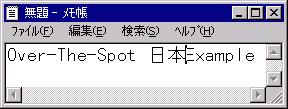
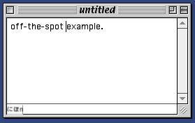

Seamonkey インプットメソッド仕様書
著者： Tague Griffithこのドキュメントの内容：
インプットメソッドの編集方式
プラットフォームのそれぞれ (Macintosh 、 Windows 、 Unix/X) が、数種類のアジア諸言語 ( 例えば、日本語、中国語、ハングル ) を、インプットメソッドという特別なシステムサービスによってサポートしています。 インプットメソッド 1 つが、キーの押下を直接タイプするわけにはいかないテキスト入力に変換する、 1 つのソフトウェア・コンポーネントになっています。 インプットメソッドは通常、標準的なキーボードには一対一で対応できないもっと多くの文字がある言語のテキストを入力するのに使われています。インプット メ ソッドは、日本語、中国語、ハングルに使われていることが多いのですが、タイ語やヒンディー語のような他の言語にも現れています。.
インプットメソッドによる編集には 4 種類の基本方式があります：オンザスポット ( on-the-spot その場 )、オーバーザスポット ( over-the-spot 直上 ) 、オフザスポット ( off-the-spot 別箇所 ) 、そしてルートウィンドウ ( root-window 別ウィンドウ ) 。 そのうちの 2 つの ( オンザスポットとルートウィンドウ ) 方式だけが Macintosh と Windows でサポートされています。 XIM (X インプットメソッド ) 標準は 4 つの方式を全て定義していますが、アプリケーションまたはインプットメソッドによってそれらの方式のうちのある特定のセットをサポートしてもらう 必要はありません。使用される方式はそのアプリケーションとインプットメソッドによってサポートされている共通の方式セットから取り決められています。
オンザスポット
構成されるテキストは、アプリケーションによって、挿入点の前にあるテキストと後ろにあるテキストとの「間にある」特別な編集範囲を維持することにより、テキストのあるウィンドウの内部にレンダリングされます。 構成されるテキストはドキュメントのテキスト部分に似通っていますが、異なったスタイルによる属性 がテキストに適用されているので、それがインプットメソッドによって構成されている文字列の一部であることを示しています。イ ンプットメソッドによって構成されている文字列の異なった部分には別のスタイルが適用されているので、その文字列が編集の別の段階にあることを示しています。 構成されているテキストはユーザーが確定するとすぐ、元のドキュメントにマージされて周囲のテキストと見分けがつかなくなります。オンザスポット方式はプラッ トフォームに よってはインライン入力としても知られています。
オンザスポット構成方式の例
 ユーザーは英語のテキストをタイプしてから、日本語のテキストを入力しようとしています。矢印キーを使って、ユーザーは"Spot " と "Example" の間に挿入点を動かし、キーボードを日本語入力モードに切り替えます。
( この操作はホットキーまたはシステムメニューを通して行うことができます )
ユーザーは英語のテキストをタイプしてから、日本語のテキストを入力しようとしています。矢印キーを使って、ユーザーは"Spot " と "Example" の間に挿入点を動かし、キーボードを日本語入力モードに切り替えます。
( この操作はホットキーまたはシステムメニューを通して行うことができます )
 ユー
ザーが編集範囲に日本語を音読みでタイプし始めます。ユーザーが [n,i,h,o,n]
とひとつながりの言葉をタイプすると、インプットメソッドは自動的に 2 つの日本語の音節に変換して右側に表示します。ローマ字の "n"
がそのまま残っているのはその変換がまだ不明瞭だからです。ユーザーがタイプしていくと、エディターは自動的に構成範囲を伸ばして、日本語のテキストを挿入し
ながらテキスト "Example"
を移動します。日本語のテキストは点線のアンダーラインで表示され、未変換のテキストであって通り抜けなければならない追加の入力段階があることを示して
います。
ユー
ザーが編集範囲に日本語を音読みでタイプし始めます。ユーザーが [n,i,h,o,n]
とひとつながりの言葉をタイプすると、インプットメソッドは自動的に 2 つの日本語の音節に変換して右側に表示します。ローマ字の "n"
がそのまま残っているのはその変換がまだ不明瞭だからです。ユーザーがタイプしていくと、エディターは自動的に構成範囲を伸ばして、日本語のテキストを挿入し
ながらテキスト "Example"
を移動します。日本語のテキストは点線のアンダーラインで表示され、未変換のテキストであって通り抜けなければならない追加の入力段階があることを示して
います。
 ユーザーがドキュメントに追加したい単語 ( "nihon" または日本に相当する
ユーザーがドキュメントに追加したい単語 ( "nihon" または日本に相当する
日本語の単語
) の読み方を入力し終えたので、 音節に対応する適切な漢字変換をユーザーは選択します。1
つの音節には複数の変換候補があるため、インプットメソッドは変換可能な候補一覧を繰り出します。ユーザーが適切な変換を選ぶと、それが次にドキュメント
ウィンドウに表示されます。ユーザーが適切な変換を選択した時点で、テキストにアンダーラインが引かれていたスタイルが変化します。
 最後に、ユーザーがある行動 ( 通常はリターンキーを押します ) をとると、最終テキストが確定されます。日本語のテキストはドキュメントにマージされて周囲のテキストと区別できなくなります。
最後に、ユーザーがある行動 ( 通常はリターンキーを押します ) をとると、最終テキストが確定されます。日本語のテキストはドキュメントにマージされて周囲のテキストと区別できなくなります。
オーバーザスポット構成方式
構成されるテキストは挿入ポイントの上に、ドキュメントのウィンドウの上部にある「レイヤー」内の挿入点にレンダリングされます。ドキュメントのテキストはユーザー がテキストを確定した後になって初めて変更されるので、構成されるテキストの編集中はドキュメントの見えない部分のままで終わることになります。
オーバーザスポット構成方式の例
 ユーザーは英語のテキストをタイプしてから日本語のテキストを入力しようとしています。矢印キーを使用して、ユーザーは "Spot " と "Example" との間にある挿入点に移動し、キーボードを日本語モードに切り替えます。
( この操作はホットキーまたはシステムメニューを通して行うことができます )
ユーザーは英語のテキストをタイプしてから日本語のテキストを入力しようとしています。矢印キーを使用して、ユーザーは "Spot " と "Example" との間にある挿入点に移動し、キーボードを日本語モードに切り替えます。
( この操作はホットキーまたはシステムメニューを通して行うことができます )
 ユー
ザーが編集範囲に日本語を音読みでタイプし始めます。ユーザーが [n,i,h,o,n]
とひとつながりの言葉をタイプすると、インプットメソッドは自動的に 2 つの日本語の音節に変換して右側に表示します。ユーザーがタイプするにつれて、この方式ではエ
ディターが構成するテキストがドキュメントの "Example" というテキストの上に重なるように描画します。
ユー
ザーが編集範囲に日本語を音読みでタイプし始めます。ユーザーが [n,i,h,o,n]
とひとつながりの言葉をタイプすると、インプットメソッドは自動的に 2 つの日本語の音節に変換して右側に表示します。ユーザーがタイプするにつれて、この方式ではエ
ディターが構成するテキストがドキュメントの "Example" というテキストの上に重なるように描画します。
 次にユーザーは音節に対応する適切な漢字変換を選択します。 1
つの音節には複数の変換候補があるため、インプットメソッドは変換可能な候補一覧を繰り出します。ユーザーがふさわしい変換を選択するとそれは発音通りの
音節を置き換えます。候補となる新しいテキストはまだドキュメントの元のテキス
トの上に描画されています。
次にユーザーは音節に対応する適切な漢字変換を選択します。 1
つの音節には複数の変換候補があるため、インプットメソッドは変換可能な候補一覧を繰り出します。ユーザーがふさわしい変換を選択するとそれは発音通りの
音節を置き換えます。候補となる新しいテキストはまだドキュメントの元のテキス
トの上に描画されています。
 ユーザーが構成されたテキストを確定すると、そのテキストはドキュメント内に挿入されます。オンザスポット入力とは違って、新しいテキストは文字列変換の一連の動きを経る代わりに 1 つの操作で挿入されます。
オフザスポット構成方式
オフザスポット構成方式はルートウィンドウ方式と非常に似通っています。これら 2 つの方式は編集領域の位置で区別されてい るだけです。オフザスポット方式は編集領域をアクティブなウィンドウの底部に貼り付けたステータスバーの中に描画しています。独立した 1 つのウィンドウが ある代わり に、それぞれのアプリケーションウィンドウにはステータスバーと編集バーがあります。
オフザスポット構成方式の例
ユーザーは英語のテキストをタイプしてから日本語のテキストを入力しようとしています。矢印キーを使用して、ユーザーは "Spot " と "Example" の間の挿入点に移動して、キーボードを日本語モードに切り替えます。 ( この操作はホットキーまたはシステムメニューを通して行うことができます )
ユー
ザーが編集範囲に日本語を音読みでタイプし始めます。 ユーザーが [n,i,h,o,n]
とひとつながりの言葉をタイプすると、インプットメソッドは自動的に 2 つの日本語の音節に変換して右側に表示します。ユーザーがタイプするにつれて、この方式ではエディターが構成するテキストをドキュメントの底部にあるステータスバーの中に描画します。
 次
にユーザーは音節に対応する適切な漢字変換を選択します。 1 つの音節には複数の変換候補があるため、インプットメソッドは変換可能な候補一覧を繰り出しま
す。ユーザーがふさわしい変換を選択するとそれは発音通りの音節を置き換えます。候補となる新しいテキストはまだステータスバーの中に描画されています。
次
にユーザーは音節に対応する適切な漢字変換を選択します。 1 つの音節には複数の変換候補があるため、インプットメソッドは変換可能な候補一覧を繰り出しま
す。ユーザーがふさわしい変換を選択するとそれは発音通りの音節を置き換えます。候補となる新しいテキストはまだステータスバーの中に描画されています。
ユーザーが構成されたテキストを確定すると、そのテキストはドキュメント内に挿入されます。オンザスポット入力とは違って、新しいテキストは文字列変換の一連の動きを経る代わりに 1 つの操作で挿入されます。
ルートウィンドウ構成方式
構成されるテキストはアプリケーションウィンドウとは全然関連をもたない完全に離れたウィンドウの中にレンダリングされます。一度入力が確定されてから、その入力は挿 入点でドキュメントの中に挿入されます。ルートウィンドウ方式はまた、プラットフォームによってはボトムラインまたはフローティングウィン ドウとしても知られています。
ルートウィンドウ構成方式の例
ユーザーは英語のテキストをタイプしてから日本語のテキストを入力しようとしています。矢印キーを使用して、ユーザーは "Spot " と "Example" の間に挿入点を移動して、キーボードを日本語モードに切り替えます。 ( この操作はホットキーまたはシステムメニューを通して行うことができます。 )
ユー ザーは日本語を音読みでタイプします。ユーザーが [n,i,h,o,n] とひとつながりの言葉をタイプすると、インプットメソッドは自動的に 2 つの日本語の音節に変換して右側に表示します。ユーザーがタイプすると、インプットメソッドは新しいウィ ンドウを持ち出してきてそのウィンドウの中に内容を表示します。このプロセスはアプリケーションに対して透過的です。
ユーザーがドキュメントに追加したい単語 ( "nihon" または日本に相当する
日本語の単語
) の読み方を入力し終えたので、 音節に対応する適切な漢字変換をユーザーは選択します。このことによってルートウィンドウの中にあるテキストは変更されますが、それはアプリケーションに透
過的です。
最後に、ユーザーがある行動 ( 通常はリターンキーを押します ) をとると、最終テキストが確定されます。日本語のテキストはドキュメントにマージされて周囲のテキストと区別できなくなります。
プラットフォームのプロトコル
それぞれのプラットフォームにおいて、インプットメソッドはプラットフォームのウィンドウシステムが定義しているプロトコルにサポートされ ています。以下のセクションでは Seamonkey がサポートしている主なプラットフォームのそれぞれで使用されているプロトコルの概要を述べます。さらに詳しい説明はプラットフォームのドキュメント を参考にしてください。
Windows
Windows のインプットメソッドプロトコルは 4 種類の異なるメッセージを特定ウィンドウのイベントハンドラに送ることになります。ルートウィンドウ方式をサポートするために、インプットメソッドは WM_CHAR
イベントをアプリケーションに送信します。オンザスポット ( Windows のドキュメントではインラインと呼びならわしています )
のサポートは、 WM_IME_STARTCOMPOSITION 、 WM_IME_COMPOSITION 、そして
WM_IME_ENDCOMPOSITION
メッセージを通じて行われます。 Windows は入力のオフザスポットまたはオーバーザスポット方式を使用しません。
ルートウィンドウのサポートはアプリケーションに透過的なシステムを処理することで行われます。インプットメソッドとオペレーティングシステムはさ
まざまな構成段階の入力を表示するという処理を、ユーザーが構成文字列を確定するまで行います。オペレーティングシステムは、最終的な構成文字列を表現する WM_CHAR メッセージをアプリケーションに送信することで確定処理を行います。
オンザスポット入力を処理するのがもうちょっと複雑なのは、アプリケーションが 3 つの追加メソッドに反応しなければならないからです： WM_IME_STARTCOMPOSITION 、
WM_IME_ENDCOMPOSITION 、そして WM_IME_COMPOSITION です。 WM_IME_STARTCOMPOSITION メソッドと WM_IME_ENDCOMPOSITION
メソッドはオンザスポット編集セッション 1 つを括弧にくくるために用いられます。アプリケーションは WM_IME_STARTCOMPOSITION
に反応して、オンザスポット構成バッファーを維持するために内部状態に必
要とされるものは何でも作成しなければならないのです。またその逆に、
WM_IME_ENDCOMPOSITION
に反応して、アプリケーションは構成バッファーを削除してそのテキストをドキュメントにマージします。
WM_IME_COMPOSITION メソッドには、構成バッファーの現在の状態を表現する文字列が含まれています。アプリケーションはこの文字列の ( ImmGetCompositionString を使用して ) 抽 出を、関連付けられた構成状態データに沿って行い、ドキュメントの中にそのデータをレンダリングする必要があります。アプリケーションは一連の WM_IME_COMPOSITION イベントを構成バッファーの状態が変更されるときに受信するでしょう。 Windows では、 WM_IME_COMPOSITION バッファーには構成バッファーの完全な状態が常に入っているので、このバッファーは他のプラットフォームのように追加的なものではありません。
Macintosh
Macintosh は 4 つの別々の AppleEvents で構成されるプロトコルを標準イベントと同様に使用してオンザスポット入力をサポートする一方、ルートウィンドウ入力がアプリケーションに送信される際には Get/WaitNextEvent イベントループを通します。 Windows と同じく、 Macintosh はオフザスポットまたはオーバーザスポット方式はサポートしていません。
ルートウィンドウのサポートはこの場合もやはり、事実上アプリケーションに対して透過的です。インプットメソッドとオペレーティングシステムは構成ウィンドウの表示 とその内容を処理します。構成文字列が確定すれば、オペレーションシステムはアプリケーションに一連のイベントを送信します。ここで押さえ ておきたい重要な点は Macintosh がアジアの文字を 2 つのイベントで送信するだろうことであって、最初のイベントでは高バイトの文字コードで、次のイベントでは低バイトで送信するということです。
オンザスポット入力は TSM AppleEvent スイートを通して実現されます： Position2Offset 、 Offset2Position 、Update 、そして GetText です。 Position2Offset と Offset2Position イベントはドキュメントまたはアプリケーションのテキストバッファーとグローバル画面座標との間でマッピングをするために使用されます。
Position2Offset イベントはグローバル画面座標の中にある特定の点についてのヒットテストを要求します。アプリケーションはこのイベントに反応してバッファーのオフセットと その特定の点の領域 クラスからなる AppleEvent 応答を構築します。領域クラスはその点がアプリケーションウィンドウの外側にあるか、アプリケーションウィンドウ 1 つの内側にあるか、またはアクティ ブな構成範囲の内側にあるかを表します。オフセットはドキュメントのテキストバッファーの開始から固定された（線形の）オフセットか、あるいはその点の領域 クラ スに依存している（アクティブな入力範囲の開始からの）相対的なオフセットです。 Offset2Position は逆にマッピングしてオフセットを取り、それをグローバル画面座標に変換します。オフセットは構成領域の開始点に相対的となりますが、構成領域が存在すればであって、構成領域が存在しない場合にはテ キストバッファーの開始点に相対的となります。
Update イベントは構成バッファーの状態を変更するために使用されます。 Update イベントには構成範囲に描画される必要がある文字列 1 つぶんの文字が含まれています。 Windows とはことなり、 Macintosh の Update イベントは追加的なものであるため、必ずしも全ての Update イベントに描画しようとしている全ての文字列が含まれているわけではないでしょう。アプリケーションは 構成バッファーが変更されると一連の Update イベントを受信します。 構成シーケンスの始まりを信号で伝える WM_IME_STARTCOMPOSITION のような特別なイベントはどこにもありません。構成の終わりは構成バッファーの長さから -1 された信号で伝えられます。
GetText が確定操作を裏返しにするために使用されます。ユーザーがあるテキストを選択してから特別にやり直し操作をします。選択されたテキストはそのとき変換されて構成範囲に入れられ ます。アプリケーションが新規の構成編集範囲を作成して、構成バッファーは選択された文字列で初期化されます。
Unix/X-Window System
Unix/X-Window System の XIM 、 X Input Method
プロトコルは、コールバック機構を使って 4 つのインプット方式をサポートしています。しかしながら、アプリケーションとインプットメソッドはどの特定の方
式をサポートをするように要求されているわけでもありません。アプリ
ケーションはアプリケーションとインプットメソッドの両方によってサポートされている方式を比較することによって使用する方式を選び、あるアルゴリズムを
適用してどの方式がその特定言
語に一番ふさわしいかを決定します。
方式を選んでから、アプリケーションはシステムにふさわしいコールバックを登録してその方式に必要なフォントまたは座標情報を
提供 ( XIC
- X Input Context にあるシステムコールを通して )
します。ルートウィンドウ方式が必要とする全てはアプリケーションのための最小限の作業ですから、 XwcLookupString または XmbLookupString を使用してキー押下を適切にインプットメソッドの入力へと変換するだけで十分です。
オーバーザスポット方式では、アプリケーションがインプットメソッドに現在のフォントとその点の位置（座標）についての情 報を提供する必要があります。アプリケーションはフォントと点位置情報を ( XSetICValue を通して ) ドキュメントの編集が進むにしたがい変更しなければなりません。
オフザスポットではアプリケーションがオーバーザスポットと同じ情報を提供する必要がありますが、さらにまた、インプットメソッドとの幾何学的な折 衝を処理しなければなりません。それはインプットメソッドがアプリケーションウィンドウのある範囲にテキストを描画する必要があるので、アプリケーション はシス テムと幾何学的な折衝をするコールバックを登録して、インプットメソッドが必要であればより広い範囲を要求したり、アプリケーションウィンドウの幾何の変 更を知らせてもらったりすることができるようにするためです。
オンザスポット方式に必要なのはアプリケーションが Windows と MacOS に使われるイベントと似たような複雑さを持ったコールバックのひとセットを登録することです。オンザスポットをサポートするために、アプリケーションは以 下のコールバックを登録しなければなりません： PreeditStart 、 PreeditDone 、 PreeditDraw 、 そして PreeditCaret です。 PreeditStart と PreeditDone は前編集 ( すなわちインプットメソッド ) 入力の始まりと終わりに呼び出されます。 PreeditDraw はインプットメソッドが前編集領域または反転部分の変更あるいはさまざまなインプットメソッド節をアプリケーションに表示させたいときに 呼び出されます。 PreeditCaret はインプットメソッドが前編集範囲の中にある挿入点の位置をアプリケーションに移動させたいときに呼び出されます。
エディターの関数
Seamonkey でインプットメソッドをサポートするために私たちが計画しているアプローチは、クロスプラットフォームのコードに実装することができて、ある特定のプラットフォーム のインプットメソッドプロトコルをサポートするために適切な方法で組み合わせることができる原始的な命令の共通セットを見つけることです。
Seamonkey のインプットメソッド編集をサポートするために、私たちはエディターのコンポーネントに以下のメソッドを追加する必要があります：
- Start Composition
- EndComposition
- SetCompositionString
- SetCompositionHilighting
- SetcaretPosition
- GetCaretCoordinates
- GetOffsetFromCoordinates
- GetRegionCoordinatesFromOffset
これらの動作はさまざまなインプットメソッドプロトコルに要求されるインプットメソッドの機能性をサポートするべきです。
Start Composition
Start Composition メソッドは構成操作の始まりを信号で伝えるために使用されます。このメソッドに反応するときに、エディターはどのようなコンテキスト情報をも、またインプットメソッド編集を処理 する状態をもセットアップする必要があります。エディターは初期の、空っぽの前編集範囲を作成する必要があるのです。
前編集範囲はただの選択とは異なるように実装されなければなりません。というのも前編集範囲は強調表示されておらず、ユーザーは挿入点を前編集範囲の内部に移動させるこ とが可能でなければならないからです。エディターは前編集範囲の位置とサイズを記 憶しておく必要があります。前編集範囲はユーザーがタイプするにつれて拡大したり縮小したりもするからです。
トランザクションマネージャーは Start Composition から EndComposition 操作までの間の中間トランザクションを記録するべきではありません。構成操作は Start Composition の前の状態から EndComposition の直前の状態へ移動していく単独のトランザクションとして表現されるべきです。
前編集範囲は一度に 1 つだけアクティブになることができます。
EndComposition
EndComposition メソッドは前編集範囲を閉じて前編集テキストをコンテントバッファーに永久に確定するのに用いられます。 Start Composition と EndComposition の間のタイピングによる変更は単独のトランザクションとして表現されるべきです。
SetCompositionString
SetCompositionString メソッドは前編集範囲の現在のテキストをセットするのに用いられます。
SetCompositionString はアクティブな前編集範囲が ( つまり Start または EndComposition
呼び出しの間に ) 入力バッファーの中にある場合にだけ用いることができます。 SetCompositionString
を呼び出すそれぞれは前編集テキストを全てセットしてから行う必要があります。 (追加的な変更を活用できるプラットフォームの幾つかとは違って ) 。
SetCompositionHilighting
SetCompositionHilighting メソッドはアプリケーションのプライベート CSS スタイル属性を前編集範囲にあるテキストに適用して、その部分をプラットフォームの UI の表示条件にしたがって強調表示させるようにします。The CSS スタイル属性はさまざまに異な る強調表示状態 ( 確認済みの、荒削りの、未確認の ) のためのシンボリックな表現であって、ユーザーにテキスト変換におけるフィードバックを提供するためにインプットメソッドによって用いられるものです。
SetCaretPosition
SetCaretPostion メソッドは挿入点 ( キャレット ) を前編集範囲の内側にある特定のオフセットに位置づけるために使われます。このメソッドはそのキャレットを前編集範囲の外側に動かすことはありません。オ フセットは前編集範囲の始まりとは相対的であり、 Unicode 文字の観点から指定されています。
GetCaretCoordinates
GetCaretCoordinates は現在のキャレット位置のグローバル画面座標を返します。もしキャレットがどこにもなければ、メソッドは適切な状態コードを返します。
GetCoordinatesOfOffset
GetCoordinatesOfOffset メソッドは前編集範囲への与えられたオフセットのグローバル画面座標を返します。オフセットは前編集範囲の開始と相対的であり、 Unicode 文字の観点から指定されています。
GetOffsetFromCoordinates
GetOffsetFromCoordinates メソッドは GetCoordinatesOfOffset の逆を行います。 このメソッドは特定の座標セットに位置づけられた文字を基にする前編集範囲へのオフセットを返します。オフセットは Unicode 文字の観点から指定されています。
GetRegionClassFromCoordinates
GetRegionClassFromCoordinates はグローバル画面座標の特定セットの領域クラス ( ドキュメントウィンドウの内側、前編集範囲の内側、アプリケーションウィンドウの外側 ) を返します。
注意：これは一般的な関数でエディターよりも多くのコンポーネントによってサポートされる必要があります。
参考文献
- Java Input Method Framework Specification (JavaSoft)
- Inside Macintosh: Text (Addison Wesley/Apple Computer)
- Developing International Software For Windows 95 and NT (Nadine Kano)
- X Windows on The World (Tom McFarland)
- Xlib Programming Manual (Adrian Nye)
- Gearing Up for Asia With the Text Services Manager and TSMTE (Tague Griffith)